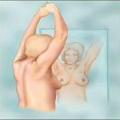
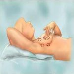
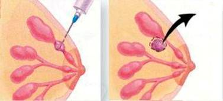

Ο καρκίνος του μαστού είναι η συχνότερα εμφανιζόμενη μορφή καρκίνου σήμερα στις γυναίκες. Προσβάλλει κυρίως τις ηλικίες μεταξύ 50 και 70 ετών, ενώ η εμφάνισή του σε ηλικίες κάτω των 30 είναι σπάνια. Όλες οι γυναίκες κατά τη διάρκεια της ζωής τους θα παρατηρήσουν κάποιο ογκίδιο στους μαστούς τους. Στις περισσότερες των περιπτώσεων πρόκειται για ακίνδυνα καλοήθη μορφώματα, όπως ιναδενώματα, θηλώματα και αλλοιώσεις ινοκυστικής μαστοπάθειας. Παρόλα αυτά, περίπου το 15% του συνόλου των γυναικών θα αναπτύξει καρκίνωμα του μαστού κατά τη διάρκεια της ζωής του και σύμφωνα με στατιστικές που έχουν γίνει στις ΗΠΑ, ο καρκίνος του μαστού αποτελεί τη δεύτερη αιτία θανάτου για τις γυναίκες.
Παράγοντες που σχετίζονται με την αυξημένη συχνότητα εμφάνισής του είναι:
- Η ηλικία (η συχνότητα αυξάνεται με την αύξηση της ηλικίας)
- Το βεβαρημένο οικογενειακό ιστορικό (συγγενείς που νόσησαν από τη νόσο)
- Η γονιδιακή μετάλλαξη (BRCA-1 και BRCA-2 ογκογονίδια)
- Η έναρξη της εμμηνόρροιας σε ηλικία μικρότερη των 12 ετών
- Η εμμηνόπαυση σε ηλικία μεγαλύτερη των 55
- Η κύηση του πρώτου παιδιού σε ηλικία μεγαλύτερη των 35 ετών
- Η ατεκνία και ο μη θηλασμός
- Η ύπαρξη άτυπων αλλοιώσεων στο μαστό
- Ο προϋπάρχων καρκίνος μαστού
- Η προηγούμενη ακτινοθεραπεία υψηλών δόσεων στην περιοχή του θώρακα
- Η πολυετής χορήγηση σχετικά μεγάλης δόσης οιστρογόνων
- Το κάπνισμα και η παχυσαρκία
Σημαντικό ρόλο στην αντιμετώπιση της νόσου διαδραματίζει η έγκαιρη – πρώιμη διάγνωση των νεοπλασμάτων του μαστού, σε στάδιο δηλαδή που η ιατρική μπορεί να προσφέρει οριστική θεραπεία σε ποσοστά που ανέρχονται άνω του 95%. Αυτό μπορεί να επιτευχθεί με την τακτική αυτοεξέταση των μαστών από την ίδια την ασθενή, την τακτική διενέργεια μαστογραφίας και υπερήχου, καθώς και την ετήσια εξέταση από τον εξειδικευμένο χειρουργό ογκολόγο.
Αυτοεξέταση:

Αυτή πρέπει να πραγματοποιείται σχεδόν κάθε μήνα, αμέσως μετά το τέλος της εμμήνου ρήσεως για τις γυναίκες της αναπαραγωγικής ηλικίας. Περιλαμβάνει αρχικά την επισκόπηση των μαστών στον καθρέπτη σε όρθια θέση, όπου αναζητούνται ορατές ασυμμετρίες, εισολκές και εξογκώματα στο περίγραμμα των μαστών. Ακολουθεί ψηλάφηση των μαστών και των περιοχών της μασχάλης, με μικρές κυκλικές κινήσεις, ασκώντας κάθετη πίεση προς το θωρακικό τοίχωμα.
Ακτινολογικός έλεγχος

Σε όλες τις ηλικίες ακόμα και και κατά τη διάρκεια της εγκυμοσύνης αν αυτό χρειαστεί μπορούμε να εξετάσουμε τους μαστούς υπερηχογραφικά, αποκτώντας πολύτιμες διαγνωστικές πληροφορίες. Η μαστογραφία συστήνεται σε ηλικίες μεγαλύτερες των 35 ετών, αρχικά ως μια πρώτη απεικόνιση αναφοράς σε αυτήν την ηλικία, και κατόπιν μετά τα 45, σε ετήσια βάση. Επιλεκτικά χρησιμοποιούνται και εξειδικευμένες εξετάσεις, όπως η μαγνητική μαστογραφία.
Κλινική εξέταση
Η κλινική εξέταση από εξειδικευμένο χειρουργό ογκολόγο είναι αυτή που μπορεί να συνδυάσει διαγνωστικά τα ψηλαφητικά με τα ακτινολογικά ευρήματα, διαχωρίζοντας τα αθώα ογκίδια του μαστού από της ύποπτες για κακοήθεια βλάβες. Κάθε βλάβη που θεωρείται ύποπτη διερευνείται με τη διαδικασία της βιοψίας, η οποία μπορεί να εκτελεστεί είτε με μια μικρή τομή, είτε με παρακέντηση δια βελόνης. Στη δεύτερη περίπτωση, αυτή μπορεί να γίνει υπό υπερηχογραφική ή μαστογραφική καθοδήγηση.

Χειρουργική θεραπεία
Το είδος της επέμβασης που θα εφαρμοστεί εξαρτάται από τη θέση, το μέγεθος και τη φύση του όγκου που πρόκειται να αντιμετωπιστεί. Ως γενικό κανόνα αναφέρουμε το ότι νεοπλάσματα που διαγνώστηκαν πρώιμα στα πλαίσια προληπτικού ελέγχου ,σπάνια απαιτούν την αφαίρεση όλου του μαστού. Αντίθετα, όγκοι που αναγνωρίστηκαν καθυστερημένα, αρκετά συχνά οδηγούν σε ολική μαστεκτομή. Σε αυτήν την περίπτωση εφαρμόζονται εξειδικευμένες τεχνικές πλαστικής χειρουργικής που μπορούν να καλύψουν τόσο το έλλειμμα του όγκου, όσο και αυτό του δέρματος, δημιουργώντας ένα νέο μαστό.
Καθοριστικής σημασίας για την έκβαση της νόσου και για την μακροχρόνια επιβίωση τελικά της ασθενούς είναι ο λεμφαδενικός καθαρισμός. Ο μαστός αποχετεύεται σε τρείς κύριες λεμφαδενικές ομάδες στην περιοχή της μασχάλης. Η συνολική εκτομή και των τριών αυτών λεμφαδενικών ομάδων είναι εφικτή από εξειδικευμένες χειρουργικές ογκολογικές ομάδες, για την επίτευξη τελικά μιας ριζικής επέμβασης, γεγονός που μειώνει δραματικά τα ποσοστά της υποτροπής της νόσου, ενώ αυξάνει εντυπωσιακά την επιβίωση των ασθενών. Σε πρώιμα νεοπλάσματα του μαστού μπορεί να εφαρμοστεί η τεχνική του “Λεμφαδένα Φρουρού”, δηλαδή η ανίχνευση του πρώτου λεμφαδένα που αποχετεύει τον όγκο. Εφόσον αυτός δεν έχει μετάσταση, μπορεί να παραληφθεί ο ριζικός λεμφαδενικός καθαρισμός της μασχάλης, απλοποιώντας κατά πολύ την επέμβαση.
Μετεγχειρητική θεραπεία
Μετά το χειρουργείο συνήθως ακολουθούν χημειοθεραπεία και ορμονοθεραπεία. Σε περιπτώσεις λεμφαδενικών μεταστάσεων εφαρμόζεται συμπληρωματικά και ακτινοθεραπεία. Όλες αυτές οι θεραπείες είναι καλά ανεκτές από τις ασθενείς, οι οποίες δεν χρειάζεται να τροποποιήσουν την καθημερινότητά τους, διατηρώντας τις όποιες προσωπικές, επαγγελματικές και οικογενειακές τους δραστηριότητες στο ακέραιο.